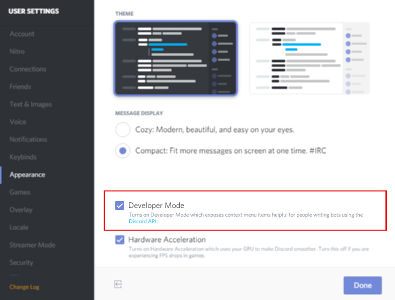
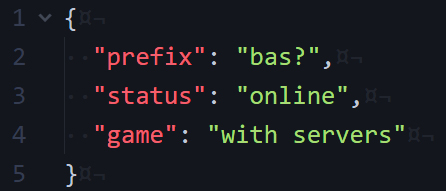
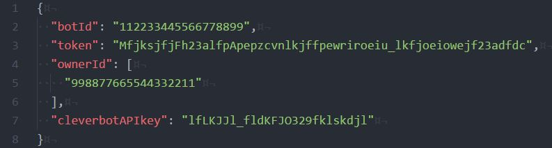
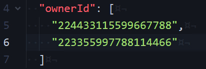
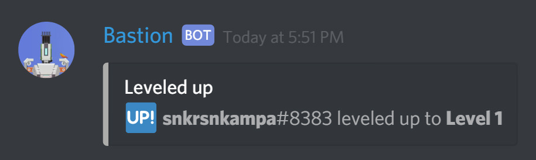

Frequently Asked Questions
GENERAL / BASIC
Question 1: What is a guild?
A Discord Guild is just a technical term for Discord Servers, that's all.
Question 2: How do I an ID (User ID, Channel ID, etc.)?
Turn on Developer Mode in the Discord client (User Settings -> Appearance) and then Right-Click on Users/Channels/Servers and select Copy ID.
For Role IDs, you instead need to Right-Click on role mentions (@somerole) and select Copy ID.

Question 3: I have an issue, where can I ask for help?
If you ever face any problems with the BOT or you don't understard something, or if you need any kind of help with the BOT, just head over to the #help channel in Bastion BOT Official Discord Server, and ask for help. Everyone will be more than willing to help you.
Question 4: I found a bug with the BOT, how/where can I report it?
Question 5: I have a suggestion for the BOT, how can I let you know?
INSTALLATION / RUNNING / UPDATE
Question 1: I get a ./BastionInstaller.sh: line X: Y Killed npm install when Installing/Updating?
This error happens when on low memory (e.g. 512MB) Computers/Servers. But don't worry, it's not a big deal. It can be fixed easily by following the steps given here.
Question 2: How do I see the BOT's log in Linux/macOS?
Inside the Bastion directory, do cat bastion.log to see the entire log of Bastion BOT.
CONFIGURATION
Question 1: How do I add/change the prefix, default status or default game of the BOT?
Open the config.json file in Bastion/settings/ directory, with a text editor.
DO NOT ever use Notepad to open the file. It breaks the file. Atleast use or .
If you do not see the .json file extension of the config.json file, you most likely have Hide file extensions enabled.
Edit the default Prefix, Status and Game of Bastion BOT, if you wish to. It should look like the image below:

Save & close the file.
Question 2: How do I add/change the BOT Token, BOT ID, Owner ID or Cleverbot API Key?
Open the credentials.json file in Bastion/settings/ directory, with a text editor.
On Windows, DO NOT ever use Notepad to open the file. It breaks the file. Atleast use or .
On Windows, if you do not see the .json file extension of the credentials.json file, you most likely have Hide file extensions enabled.
Add BOT ID, Token, Owner ID(s) and Cleverbot API Key in the respective placeholders. It should look like the image below:
Wondering how to get a Cleverbot API Key? See the next question.

Save & close the file.
Question 3: How do I get a Cleverbot API Key?
Select a API Pack as per your requirements. Click on Add to Cart / Sign up now.
Input your details as mentioned. After you complete the signup, you will receive an email to verify your account. After you verify login to your account using the email & password you had selected during signup.
After you are successfully logged in to your account, you will see your API Key in My Accounds section.
Keep this page open, or copy your API Key, as you are going to need this during the BOT installation.
Question 4: How do I add more than one Owner to the BOT?
Open the credentials.json file in Bastion/settings/ directory, with a text editor.
On Windows, DO NOT ever use Notepad to open the file. It breaks the file. Atleast use or .
On Windows, if you do not see the .json file extension of the credentials.json file, you most likely have Hide file extensions enabled.
Add ,to the previous BOT ID then add another ID after that. It should look like the image below:

Save & close the file.
LEVEL / XP / CURRENCY
Question 1: How will my Level increase in my Bastion Profile?
Then Level in your Bastion Profile increases based on your Experience Points (XP). When your XP is increased to a certain amount, you are leveled up, dude! And you even get some Bastion Currencies as a Winning Bonus!

Question 2: What is Bastion Currency?
Bastion Currency is the Virtual Currency issued by the generous Bastion BOT.
Question 3: How do I get Bastion Currency?
OMG! Money! How do I get that? Don't worry, you will get Bastion Currencies from a lot of stuffs, like when you reach a new level, win a bet in a gambling game of Bastion. Or if someone gives you.
You can also get Bastion Currencies when you report a valid bug with the BOT or give a suggestion for the BOT that is accepted.
Question 4: What can I do with Bastion Currencies?
Currently you can give/take Bastion Currencies from other users, and you can gamble with Bastion Currencies. In future, hopefully, you can do a lot more with these. It's gonna be a lot of fun.
COMMANDS
Question 1: How do get a list of all commands?
To get a complete list of commands type bas?commands or go here.
Replace bas? with the prefix of your BOT.
Question 2: How do I use a command?
You can get help on commands and see thier usage/examples by using bas?h command_name
Replace bas? with the prefix of your BOT.
Question 2: What are the variables I can use in greeting message, farewell message, etc.?
You can use the following variables:
$user - Mentions the user that triggered this event.
$username - the username of the user that triggered this event.
$server - The name of the server that this event was triggered on.
$prefix - The prefix that the BOT uses.
MUSIC
Question 1: Music commands aren't working in Public BOT?
Music is disabled on public Bastion BOT due to high hosting costs. In the future it will be available for donators.
Question 2: Music is (still) not working/laggy?
Maybe your computer/server, where you are hosting the BOT, has connections/bandwidth issues. Or latency from your computer/server to Discord is high. Try changing your Discord Voice Server Region to a location near your computer/server.
You have a issue/question and it's not listed here? Sorry dude, just head over to the #help channel in Bastion BOT Official Discord Server, and ask for help.